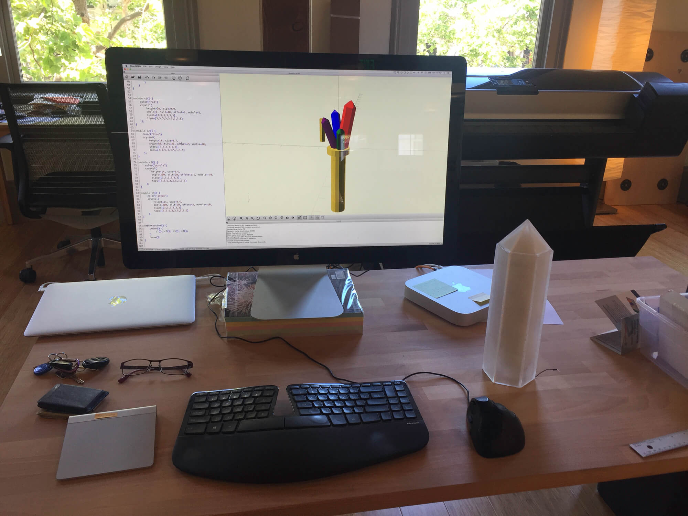
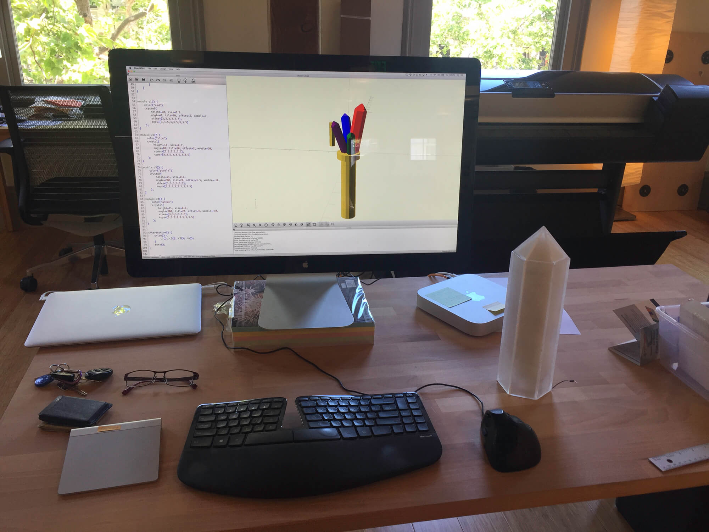

Crystal Campfire installed in a teepee at Chillits 2017. Pressing the button changes the lighting mode and each mode has an ambient sound (ocean, rainforest, campfire, sunrise, thunderstorm) that goes with it.


We created these crystals originally for the Priceless 2017 Dirt Stage. The theme was the 90s computer game, Myst.
We prototyped in paper, using actual crystals for a scale model, and using 3D software.
 



All the angles are based on quartz crystal geometry. We mitered the angles on the laser cutter using custom lasercut jigs. Every edge had to be held in place at the proper angle while the laser performed a single slice.
We frosted each face using a rotary sander, then assembled the faces and bonded them together using acrylic cement.
We wrapped LED strip around a cardboard tube and used bubble wrap and poly-fil to defuse the light. The crystals are installed on a stained plywood base which is then covered with gravel.


For the Chillits installation we added a sound component. We created a new base and added speakers with lasercut covers.
Stephanie Geerlings and the Priceless 2017 Dirt Stage team for inspiration, Ryan Alexander for the photos, Gabriel Dunne for his advice, assistance, and the use of his studio, and Dynamicland for the tools and space to create.